International Maritime Organization (IMO)
Structure of conventions, codes, and protocols with key concepts for maritime training.

Relationships explained in HTML
The IMO connects to the Assembly, Council and Secretariat. The Council coordinates MSC, MEPC, Legal, Technical Cooperation and Facilitation Committees. MSC links to SOLAS, STCW, COLREG, SAR, ISPS and technical codes; MEPC to MARPOL, BWM and AFS; and the Legal Committee to CLC, FUND and LLMC. SOLAS expands into chapters, MARPOL into six annexes, and STCW into its Code, functions and model courses.
Key IMO concepts and its main conventions
🏛️ IMO — International Maritime Organization
UN specialized agency responsible for the safety and security of shipping and the prevention of marine pollution from ships.
- Foundation: Convention adopted in 1948, in force since 1958
- Headquarters: London, United Kingdom
- Members: 175 states + 3 associate members
- Guiding principle: “Safe navigation, clean seas, competent seafarers”
- Instruments: Conventions, codes, guidelines, and binding resolutions
- Amendments: Tacit acceptance procedure
🛡️ SOLAS — Safety of Life at Sea
The most important international maritime safety treaty. Its origin dates back to the sinking of the Titanic (1912). Current version: 1974 with the 1988 Protocol and continuing amendments.
- Objective: Minimum standards for construction, equipment, and ship operation
- Scope: Ships on international voyages
- Structure: 14 chapters
- Certificates: Passenger Ship Safety, Construction, Equipment, and Radio
- Control: Port State Control (PSC)
🌊 MARPOL 73/78 — Pollution Prevention
The main convention for preventing pollution of the marine environment caused by ships.
- 6 Annexes: Oil (I), Noxious liquid chemicals (II), Packaged harmful substances (III), Sewage (IV), Garbage (V), Emissions (VI)
- Special areas: Mediterranean, Baltic, North Sea, Caribbean, Red Sea
- ECA: Emission Control Areas with strict SOx and NOx limits
- 2020 milestone: Global sulfur limit reduced to 0.50%
- Decarbonization: The IMO's 2023 Strategy sets an ambition to reach net-zero GHG emissions from international shipping by or around 2050.
📚 STCW — Training, Certification and Watchkeeping
International minimum training standards for seafarers. Legal basis for HydroAbyss training content.
- Origin: 1978, revised in 1995, Manila Amendments 2010
- Code: Part A (mandatory) + Part B (recommended)
- 7 Functions: Navigation, Cargo, Control, Engineering, Maintenance, Radio, Security
- 3 Levels: Support, Operational, Management
- Model Courses: 1.19 FBSM, 1.20 FSEI, 1.21 PSM, 1.29 BP
🚦 COLREG — Collision Prevention Regulations
The “rules of the road at sea”. They regulate navigation conduct, lights, shapes, and sound signals.
- Structure: 38 Rules in 5 Parts + 4 Annexes
- Part B: Steering and sailing rules
- Part C: Lights and shapes
- Part D: Sound and light signals
- Rule 5: Proper lookout — one of the most cited rules in casualty investigations
🆘 SAR — Search and Rescue
International search and rescue plan dividing oceans into SAR regions with MRCC coordination centers.
- Complement: IAMSAR Manual (3 volumes)
- SRR: Regions assigned to each coastal state
- SOLAS: Chapter V requires assistance to persons in distress
🔒 ISPS — Ship and Port Facility Security
Post-9/11 code to protect maritime transport against unlawful acts.
- Implementation: SOLAS Chapter XI-2, mandatory since July 2004
- 3 Levels: Normal (1), Heightened (2), Exceptional (3)
- Roles: PFSO, SSO, CSO
- Plan: Each ship and facility must have an approved plan
☢️ IMDG — Dangerous Goods Code
It regulates the safe carriage of dangerous goods by sea through nine hazard classes.
- 9 Classes: Explosives, gases, flammable liquids, flammable solids, oxidizers, toxics, radioactive, corrosives, miscellaneous
- Content: Classification, packaging, marking, labelling, stowage, and segregation
- Mandatory: Since 2004
- Updates: Every 2 years